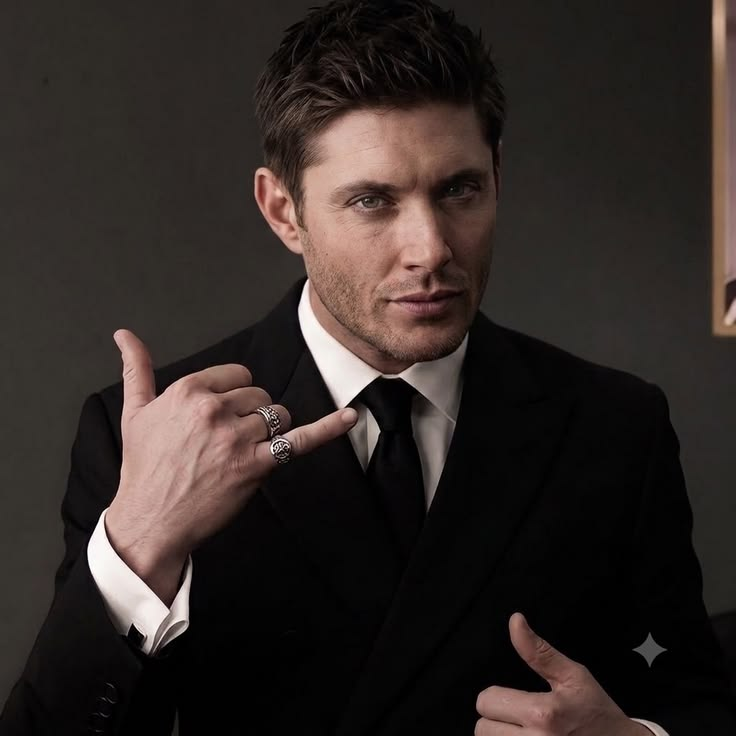
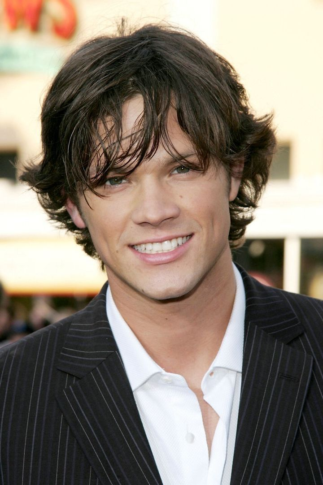
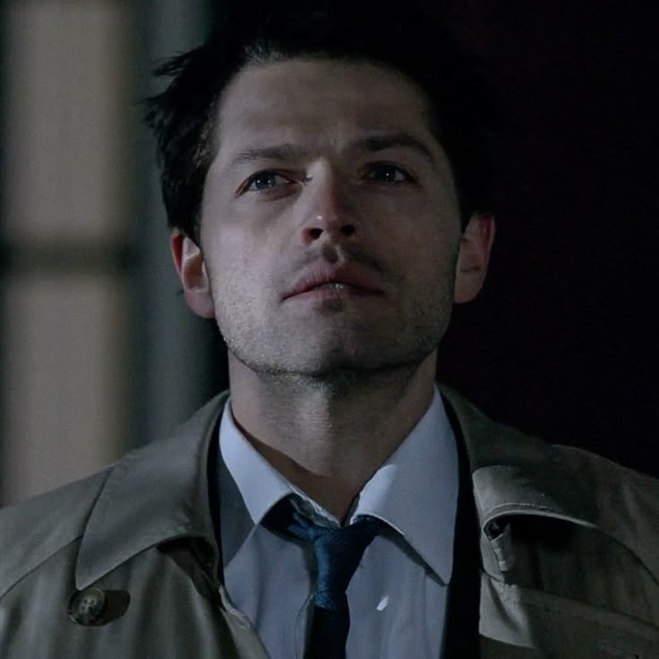
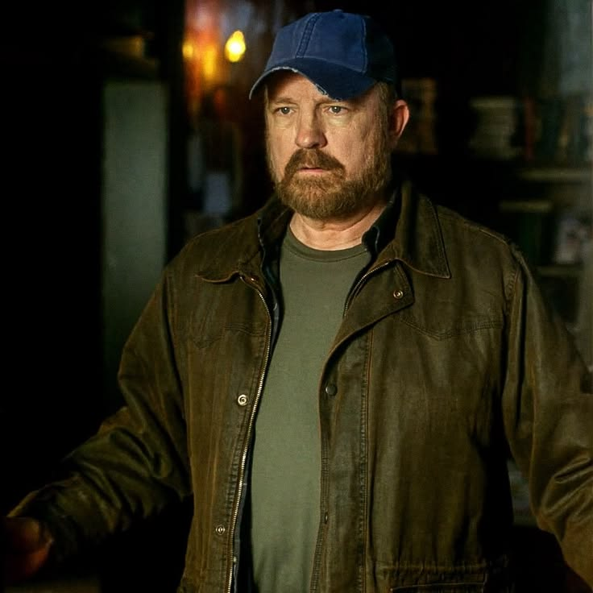
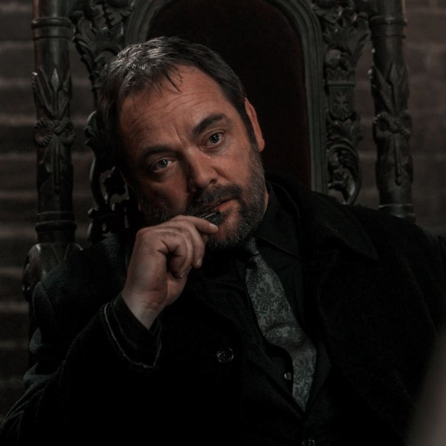
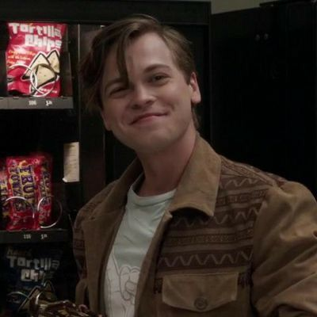
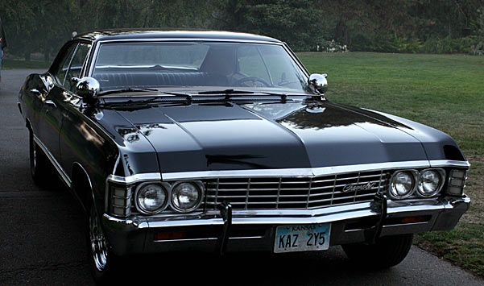

Sobre a série
Supernatural é uma série criada por Eric Kripke e lançada em 2005. A história acompanha os irmãos Sam e Dean Winchester em suas aventuras caçando criaturas sobrenaturais.
A série possui 15 temporadas e conquistou fãs ao redor do mundo.
Personagens
Dean Winchester

Dean Winchester é um caçador conhecido por sua coragem, seu humor e seu amor pelo Impala.
Sam Winchester

Sam Winchester é o irmão mais novo de Dean e enfrenta criaturas sobrenaturais ao lado dele.
Castiel

Castiel é um anjo que se torna um grande aliado dos irmãos Winchester.
Bobby Singer

Bobby Singer é um caçador experiente e uma importante figura paterna para Sam e Dean.
Crowley

Crowley é um poderoso demônio que se torna inimigo e aliado dos irmãos em diferentes momentos.
Jack Kline

Jack é um personagem importante nas últimas temporadas e possui uma ligação especial com os irmãos Winchester.
Criaturas
- Demônios
- Vampiros
- Lobisomens
- Wendigos
- Fantasmas
- Leviatãs
O Impala
1967 Chevrolet Impala — Baby

O Chevrolet Impala 1967 é o carro mais marcante da série e acompanha Sam e Dean durante suas aventuras.
Armas e objetos
- O Colt
- A Faca da Ruby
- Lâminas angelicais
- Livro dos Monstros